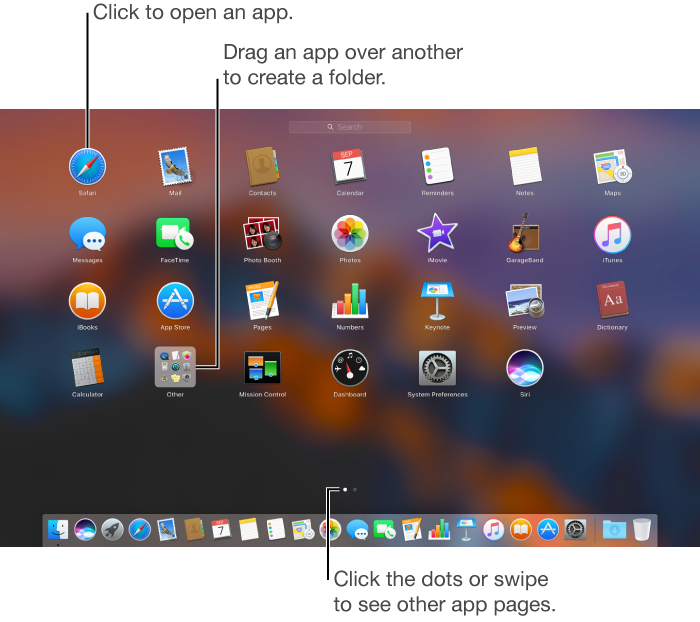
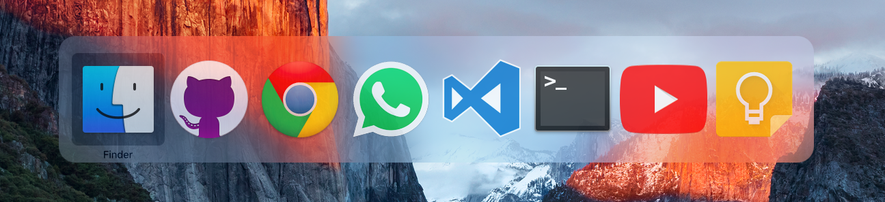

The Task Switcher is a vital component for increasing productivity in an operating system, and allows the user to switch between different applications.
The task switcher can come in many forms, and is very dependent on the system, but there are three main appearances which exist on modern desktop operating systems. The first, and most popular, is the task bar. This contains a set of icons that represent each application, and is located on either the bottom or side of the screen. Each icon can be left-clicked on to toggle that task being opened or minimized, and users can also right-click on the tasks to access a menu with additional options, including quiting tasks. The second common appearance is a hotkey or trackpad gesture which opens a temporary screen showing all the open tasks. The specifics of this vary by system, but the hotkey is often good for switching between full screen tasks quickly, since it doesn't require and window minimization. Operating systems systems also have a third task switcher which gives more technical information on tasks. This is called Task Manager on Windows and Activity Monitor on Mac. This window can usually be opened with a keyboard shortcut and gives performance and resource usage information on individual tasks. Tasks can be terminated from this window, including tasks which are not responding and cannot be closed normally.
Task switcher events are fairly simple. The task switcher is either onscreen or offscreen. And there is usually a hover event when each task is selected, followed by a select even when the task is selected. Then, of course, there is a task switch event when switching to the new task. There is also possibly the appearance of an options menu event from an alternative click and a preview event from a long hover.
Taskbars, hotkeys, and task managers are especially apparent on modern versions of Mac, Ubuntu, and Windows. Also Mac OS has a desktop switcher which can switch between multiple virtual populated desktops, instead of individual tasks. Also it is important to mention that task switchers on mobile OS’s are very different for each platform, and do not look the same as on desktops. The taskbar and task manager have been around a very long time and are on most previous versions of Windows and OSX. Hotkey task switching behavior is a more recent development.
Efficiency is arguably the most important usability measure, as there should be no delay after the task is selected. Because efficiency is of such high priority, there should be almost no errors from a user to accidentally open the wrong program, as the program selected should be the only one that is affected. That being said, all of the task switchers vary in efficiency depending on the task. The taskbar is generally most efficient as it is accessible on any screen and shows all active tasks in one view. The hotkey is most efficient for switching back and forth between multiple tasks, and is also the best solution to switching between fullscreen applications. The task manager is not very efficient at switching tasks, neither is it the most efficient at closing tasks, because it takes time to come up and navigate to the wanted task, however it is the most powerful, and must be used when the other methods are not working.
Satisfaction is also of high priority, and is closely tied to efficiency. The user should feel that switching tasks is effortless, and feel a sense of fluidity as they are switching between tasks.
Learnability of task switching is an important metric for a task switcher and should be very quick. It may take longer to discover all the features in a task switcher, like hiding or quitting applications, but it's main function of switching tasks should be intuitive. Once the task switcher is active, there should be no confusion and no series of extra steps to accompish switching to a different task. For example while finding the hotkey, trackpad gesture, or task manager might be harder, the action itself must be simple and inutitive. However assuming a user will be using any given OS multiple times, the difficulty of finding the different types of task switchers only affects learnability at the outset.
Memorability is one of the less important metrics because since the taskbar is always available on screen, the user only needs to memorize the hotkey or how to launch the task manager. Once that input is memorized, there should not be any confusion on what to do next. All three versions of the task switcher are fairly simple mechanisms, and they always function the same no matter what or how many tasks are open.
Errors, while important, should not be a hurdle for the task switchers as they are fairly simple. However, users could often accidentally open a pinned task on the taskbar by misclicking, or accidentally close or switch away from a task they want open. The hot key has the error of hitting the key too many or few times, and therefore switching to the wrong task. The task manager takes more effort to open, but once opened it is simply a matter of selecting the task you wish to close.
The most important characteristic for a task switcher is illuminated by the above overview of usability metrics. The most important characteristic of a good task switcher is efficiency, allowing the user to be able to switch to any given task with as few clicks as possible. The switching action should be quick as well, avoiding unnecessary transitions or animations. It should be reasonably easy to learn and use, and should work the same no matter how many tasks are active.
Another characteristic of a good task switcher is accessibility from any screen or program, and the ability to move between any needed task or quit a task. Simplicity is also a key characteristic. Upon the task switcher's launch, the user should have no trouble distinguishing which tasks are open, which task is currently selected, and how to open the next selected task.
Task switcher states depend on the functionality of the switcher, but as a general overview we can say that there a few different states such as task not-running, task running, and task selected. It is important to note that, in the taskbar or tray, tasks which are not currently running can still be pinned, and selected, or opened.
When multiple apps and windows are open, it can be difficult for users to find the one they want. Luckily MacOS Sierra provides these platform-specific task switchers to move among apps.
Mission Control gives users an easy way to see all their desktops and full-screen windows, in addition to Dashboard and the Dock, at one time. In Mission Control, users can create a new desktop, switch between desktops and full-screen windows, or choose a specific window on the current desktop.
To open Mission Control the user either presses the F3 key, enters Control + Up, enables a trackpad gesture (i.e. swiping up with three or more fingers), or enables Hot Corners so when they move the pointer to the corner of the screen Mission Control is launched.

Once the user launches Mission Control they are met with the following view:
Mission Control shows all of the windows open on the desktop, arranged in a single layer so it’s easy to spot the one you need. Apps that are in full screen or Split View, and desktop spaces you created, are shown as thumbnails in the Spaces bar along the top edge of the screen.
Launchpad is a central location where you can see and open apps that are on your Mac. When you download an app from the App Store, it automatically appears in Launchpad. To open Launchpad, click the icon in the Dock. To close Launchpad without opening an app, click anywhere on the screen (except on an app), or press Esc.
Once the user launches Launchpad they are met with the following view:

Launchpad works especially well for opening and finding apps as well as the organization of apps, which aids efficiency when using it to switch between apps.
Users can organize apps in Launchpad by:
To launch the Task switcher the user presses and holds the Command button, and taps on Tab. The task switcher pops up, taking screen priority, showing all currently open apps with the current app being highlighted:

"Apple." MacOS Sierra: Use Launchpad to View and Open Apps. N.p., n.d. Web. 27 Oct. 2016.
"Apple." MacOS Sierra: Manage Windows on the Desktop. N.p., n.d. Web. 27 Oct. 2016.
"Apple." MacOS Sierra: Manage Windows on the Desktop. N.p., n.d. Web. 27 Oct. 2016.
"MacOS Human Interface Guidelines: App Extensions." MacOS Human Interface Guidelines: App Extensions. N.p., n.d. Web. 27 Oct. 2016.
Written by Claire Ortega with some integrations from both Flanders Lorton and Victor Frolov's contributions. Embedded videos are original content.